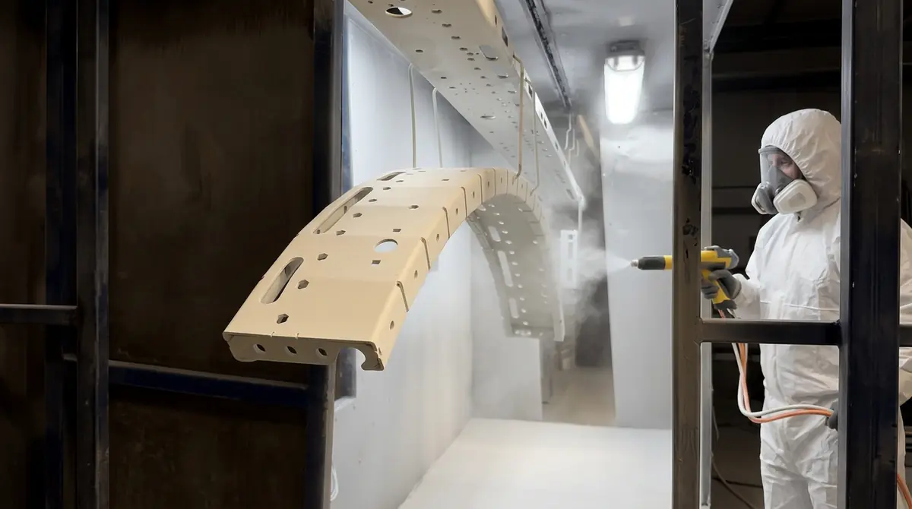

La pintura electrostática líquida es una pintura en estado líquido (de base solvente o agua) que se atomiza con una pistola o campana que carga eléctricamente las gotas. La pieza, conectada a tierra, las atrae y queda cubierta con menos desperdicio que con una aplicación convencional.
Es decir, la electrostática no es exclusiva del polvo: es un principio de aplicación que también se usa con líquidos. Lo que cambia entre uno y otro es el material, y con él el curado, el equipo y el cuidado del medio ambiente.
En esta guía explicamos cómo funciona, si necesita horno y cuándo se usa. En Steel Paint nos dedicamos a la maquila de pintura en polvo, así que te lo contamos desde el lado de quien aplica polvo todos los días. Si buscas una comparación general entre ambas pinturas, está en pintura en polvo vs pintura líquida; aquí nos enfocamos en la aplicación.
¿Qué es la pintura electrostática líquida?
Es el mismo recurso de la pintura electrostática, la atracción entre un material cargado y un metal a tierra, aplicado a una pintura que no es polvo. También la verás escrita como pintura líquida electrostática, pintura electroestática líquida o electrostatica liquida, sin acento.
Si apenas conoces la tecnología base, empieza por qué es la pintura electrostática y cómo funciona. Y si te topaste con nombres que suenan parecido (aerostática, hidrostática), los aclaramos en la guía de pintura aerostática, hidrostática y electrostática.
Cómo funciona la aplicación electrostática de pintura líquida
El proceso sigue una secuencia sencilla, aunque los equipos varían según la planta:
- La pintura líquida llega a la pistola o a una campana giratoria que la atomiza en gotas muy finas.
- Un electrodo en el equipo les da carga eléctrica al salir.
- La pieza metálica, conectada a tierra, atrae las gotas cargadas.
- Las gotas se acomodan sobre la superficie y se unen en una película continua.
- La película se seca o se cura según la formulación de la pintura.
Esa atracción hace que parte de la pintura se envuelva hacia zonas poco expuestas de la pieza, lo que mejora la cobertura de bordes y reversos. La carga no sustituye la preparación: sobre un metal sucio o mal tratado la pintura líquida también se desprende, como explicamos en la guía de preparación de superficie para powder coating.
Qué ventajas aporta cargar eléctricamente la pintura líquida
Frente a atomizar sin carga, la aplicación electrostática de líquidos suele aprovechar mejor la pintura, porque más gotas terminan en la pieza y menos en el ambiente. Además mejora la uniformidad en piezas de forma complicada, como tubos, rejillas o perfiles.
Esas ventajas son reales, pero son relativas a la pintura líquida sin carga, no al polvo. El polvo tiene su propia ventaja: lo que no se adhiere puede recuperarse y volver a usarse, algo que con el líquido no ocurre igual.
¿Se hornea la pintura electrostática líquida? El mito de "sin horno"
La búsqueda "pintura electrostática sin horno" se refiere casi siempre a pinturas líquidas, y la respuesta es que depende de la formulación. Hay pinturas líquidas que secan al aire, otras que se aceleran con calor moderado y otras que necesitan un curado más completo.
La pintura en polvo no tiene esa opción: siempre necesita horno, porque el calor es lo que funde la resina y activa su reacción. Por eso un proceso de polvo debe incluir un horno, como el continuo y el batch con los que trabajamos en Steel Paint. Si tu duda es qué tan resistente queda cada película, la comparativa de durabilidad está en la guía de polvo vs líquida.
No confundas la pintura electrostática líquida con otros sistemas
Cuatro procesos distintos se mezclan en las búsquedas y en las cotizaciones, y conviene separarlos desde el principio:
- Pintura líquida convencional: se atomiza con aire o a presión, sin carga eléctrica. Es la que muchas personas llaman pintura de pistola o aerográfica
- Pintura electrostática líquida: la misma pintura líquida, pero con las gotas cargadas para que la pieza las atraiga, como describimos arriba
- Electrodepósito (electrocoat): la pieza se sumerge en un baño de pintura al agua y una corriente eléctrica deposita la película; aunque el nombre suena parecido, es un proceso de inmersión y no de aplicación con pistola
- Pintura electrostática en polvo: no hay líquido; el polvo se carga, se adhiere a la pieza y se cura en horno
Si una cotización dice solamente "pintura electrostática", pregunta si el material es líquido o polvo y cómo se cura. Los nombres que se usan por error para referirse a estos procesos los aclaramos en la guía de pintura aerostática, hidrostática y electrostática.
Limitaciones de la pintura electrostática líquida
También tiene puntos débiles que conviene conocer antes de decidir:
- Solo funciona sobre piezas conductoras: el metal debe estar bien conectado a tierra; si no, la atracción se pierde y el acabado se ve disparejo
- Cavidades profundas: el campo eléctrico no llega bien al interior de huecos y esquinas cerradas, un efecto que también se presenta con el polvo
- Pinturas al agua: como el agua conduce la electricidad, el equipo necesita aislar el sistema, lo que complica la instalación
- Solventes y emisiones: las pinturas con solvente liberan compuestos orgánicos volátiles y exigen manejo y ventilación cuidadosos
- Escurrimientos: un exceso de película puede correr o descolgarse antes del secado, algo que el polvo no hace
Pintura electrostática líquida vs en polvo: qué cambia en la aplicación
Esta tabla compara solo la aplicación. Para durabilidad, costo y ambiente, consulta la comparativa completa.
| Aspecto | Líquida electrostática | En polvo |
|---|---|---|
| Material | Líquido con solvente o agua | Polvo seco de resina |
| Cómo se forma la película | Se evapora el medio | Se funde y cura en horno |
| Horno | Depende de la pintura | Siempre necesario |
| Sobrante | Se pierde como overspray | Se puede recuperar |
| Solventes | Sí, en la mayoría | No lleva |
Qué conviene según tu situación
Estos ejemplos generales ayudan a ubicar tu caso. No sustituyen la revisión de tu pieza, pero te dan un punto de partida:
- Fabricas piezas metálicas de tamaño medio en serie y caben en un horno: el polvo suele ser la opción más directa, por su acabado uniforme y porque no usa solventes.
- Tu pieza es muy grande, o ya está instalada y no se puede llevar a un horno: la pintura líquida (con o sin carga) es la que se puede aplicar en sitio.
- Tu pieza combina metal con plástico, madera u otro material sensible al calor: el curado en horno del polvo puede dañar esos materiales, y una líquida que seque a temperatura ambiente pasa a ser una opción a evaluar.
- Necesitas un efecto muy específico, translúcido o de gran profundidad visual: normalmente se resuelve con pintura líquida especializada.
- Buscas un acabado resistente al desgaste, sin solventes y repetible lote tras lote: el polvo.
Errores comunes al hablar de pintura electrostática líquida
- Creer que "electrostática" significa automáticamente "en polvo": es un principio de aplicación y se usa con ambos materiales.
- Pedir "sin horno" y esperar el mismo resultado que una película de polvo curada: son sistemas con características distintas.
- Pensar que la carga eléctrica reemplaza la preparación del metal: sin limpieza adecuada, cualquier pintura se desprende.
- Elegir la pintura solo por el costo del material, sin considerar el desperdicio, la ventilación, el manejo de solventes y los retrabajos.
- Comparar sistemas sin definir antes el uso final de la pieza: interior o exterior, desgaste esperado y especificación del cliente.
Cuándo se usa cada una y qué hacer si dudas
La pintura líquida, con o sin carga, sigue usándose en piezas muy grandes, en trabajos que no pueden entrar a un horno y en acabados específicos. La de polvo es la opción habitual en piezas metálicas fabricadas en serie, como las que vemos en la industria automotriz de Monterrey y en el mueble metálico.
Si tu pieza cabe en un horno y tu especificación no exige otra cosa, el polvo suele ser el camino más directo. Para entender los materiales, revisa los tipos de pintura en polvo y, si quieres profundizar, el Powder Coating Institute publica material técnico sobre el tema.
Preguntas frecuentes sobre la pintura electrostática líquida
¿Qué es la pintura electrostática líquida?
Es una pintura líquida (con base solvente o agua) que se atomiza con una pistola o campana que le da carga eléctrica a las gotas. Como la pieza está conectada a tierra, las gotas son atraídas hacia ella y la cubren de forma más pareja y con menos desperdicio.
¿La pintura electrostática líquida necesita horno?
Depende de la formulación. Algunas pinturas líquidas secan al aire y otras se aceleran o curan con calor; la ficha técnica del fabricante indica qué requiere cada una. La pintura en polvo, en cambio, siempre necesita horno para fundir y curar.
¿Cuál es la diferencia entre pintura electrostática líquida y en polvo?
En ambas la carga eléctrica ayuda a que la pintura se adhiera a la pieza. La diferencia está en el material: la líquida lleva solvente o agua que debe evaporarse, y el polvo es una resina seca que se funde y cura en el horno.
¿Se puede aplicar pintura líquida electrostática sobre cualquier metal?
Se aplica sobre piezas metálicas conductoras y conectadas a tierra, como acero y aluminio. Como en cualquier recubrimiento, el resultado depende de que la superficie esté limpia y preparada.
¿Qué es mejor para piezas industriales: pintura líquida o en polvo?
Depende de la pieza y del uso. Para producción en serie de piezas metálicas, el polvo suele ser la opción habitual por su acabado uniforme y porque no usa solventes; la líquida sigue usándose en piezas muy grandes o cuando el acabado exige otras características.
Antes de elegir, define qué necesita tu pieza
La carga electrostática es una herramienta de aplicación, no un tipo de pintura. Lo que decide el resultado es el material (líquido o polvo), la preparación del metal y la forma de curado. Con esas tres variables claras, comparar sistemas deja de ser una cuestión de nombres y pasa a ser una decisión técnica sobre tu pieza.